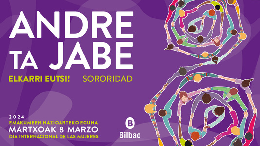

Bilbao pone en valor las alianzas entre mujeres
Una expresión que revindica la posición que las mujeres ocupan en esta sociedad.

Necesidades
- Reducir distancias ideológicas, económicas, sociales, culturales o físicas entre las mujeres
- Crear redes de apoyo
- Generar espacios de confluencia y relaciones entre deferentes colectividades y mujeres
- Reforzar el empoderamientos, individual y colectivo
Imagenes de esta campaña 2024
- Distintas mujeres de la mano.
- Formación del número 8
- Simbolización la unión sin fin.
- Realización de acciones y consecución de objetivos comunes.
Página realizada por Aner M.